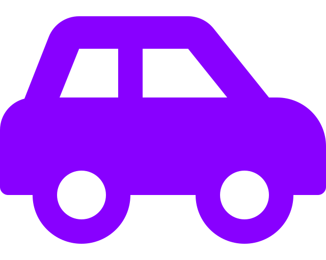
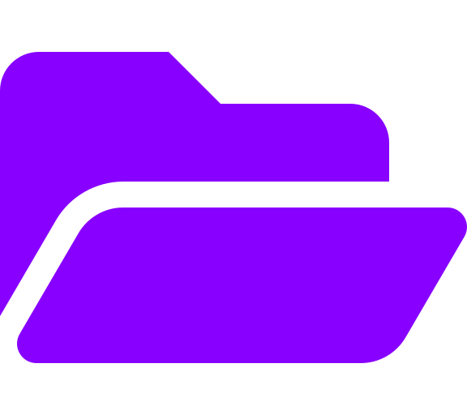
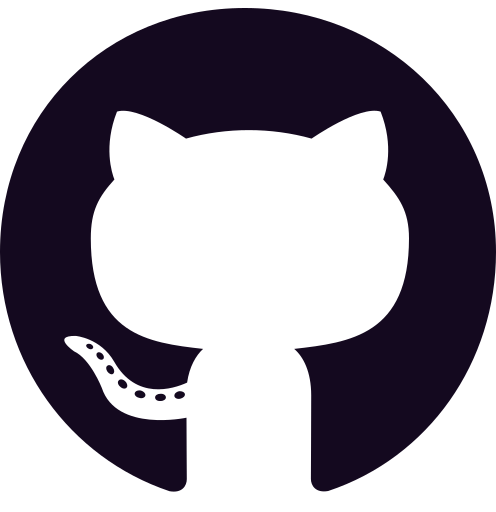
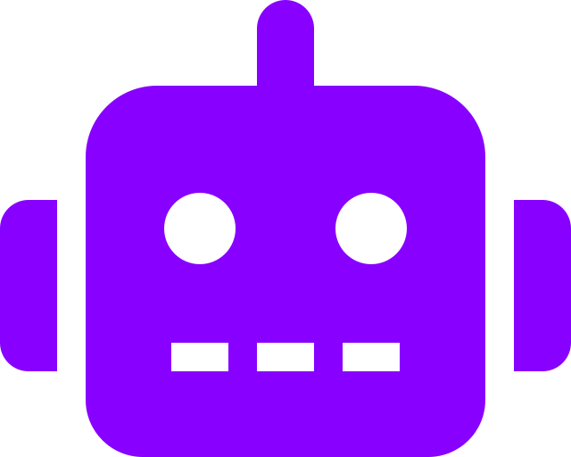
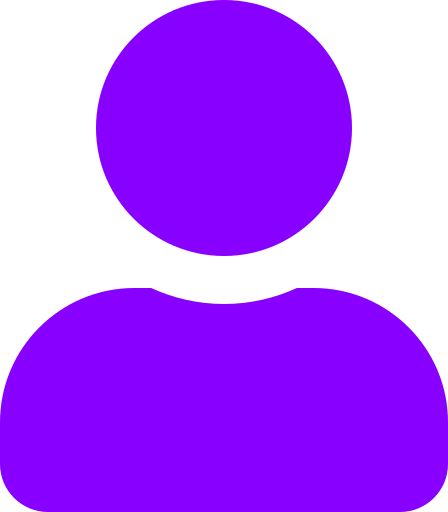
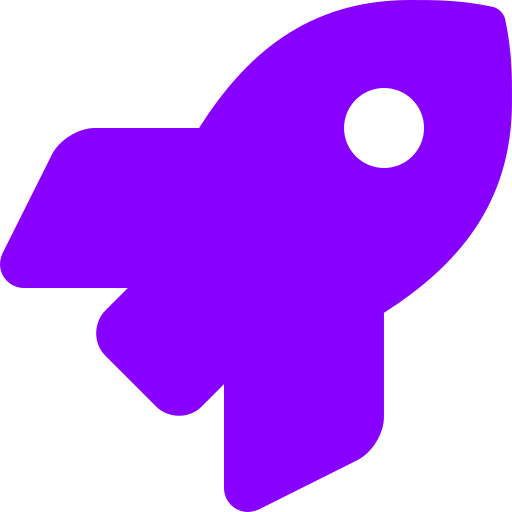

IA NA PRÁTICA · REN JOVENS
23 termos para todo mundo chegar no sábado falando a mesma língua.
Sábado, 28/11 · 10h
Brasília
01 · O básico
IA que cria coisas novas a partir de um pedido seu: texto, imagem, áudio, vídeo e até código.
O “motor” da IA: o cérebro que entende e escreve. O app é o carro; o modelo é o motor. ChatGPT é o app; GPT é o modelo.
O pedido que você escreve. Para um agente, escreva como um briefing: o resultado, o contexto, os limites e o que é “pronto”. O caminho, deixe com ele.
Objetivo: me preparar para a reunião de segunda com o cliente Alfa.
Contexto: use nossos e-mails no Gmail e o contrato no Drive.
Entrega: 1 página com pendências, riscos e 3 perguntas para eu fazer.
Limites: não envie nada a ninguém. Se algo não estiver nos arquivos, diga que não achou.
02 · Como ela funciona
Tudo o que a IA está “vendo” agora: a conversa, os arquivos e as instruções. O que não está no contexto, ela não sabe.
Pedacinho de palavra: é nessa unidade que a IA lê e escreve. É com ela que se mede quanto cabe numa conversa e quanto custa usar.
Quando a IA inventa algo com toda a confiança: um livro, um dado, uma lei.
Modo em que a IA “pensa” antes de responder. Demora mais e acerta mais em problemas difíceis, como contas e planejamento.
Nos apps: “Pensar”, “Thinking”.
Entende e gera vários formatos: texto, imagem, áudio e vídeo.
03 · A diferença
O assunto principal do sábado.
Você pergunta, ela responde. Quem executa é você.

AGENTEVocê dá um objetivo. Ele planeja, usa ferramentas e entrega pronto.

É o motorista: te leva lá.Conversa de pergunta e resposta. Ótimo para tirar dúvidas e escrever; o resto do trabalho fica com você.
IA que recebe um objetivo e trabalha sozinha: planeja, usa ferramentas, confere o resultado e entrega pronto.
Recurso que faz o app trabalhar como agente: navegar em sites, preencher formulários, montar arquivos.
Nos apps: “Modo agente” no ChatGPT; no Claude, o Claude Code e o Cowork.
04 · Por dentro

Tudo o que fica em volta do modelo para ele trabalhar. A palavra quer dizer “arreio”: o cavalo tem a força, o arreio direciona. Mesmo modelo, harness diferente: resultado diferente.
Ações que a IA pode executar: buscar na web, ler um arquivo, rodar código, enviar um e-mail.
O que a IA guarda sobre você de uma conversa para outra. Dá para ver e apagar nas configurações.
05 · Conectando
Liga a IA às suas contas, como Gmail, Agenda e Drive. Com a sua permissão, ela passa a ler e usar esses dados.
Nos apps: “Conectores” ou “Apps”.
Sigla de Model Context Protocol: o padrão que liga agentes a ferramentas e dados. É o “USB‑C da IA”: um plugue que serve em vários apps.
Uma receita escrita em texto que o agente segue passo a passo. Você ensina uma vez e ele repete sempre do mesmo jeito.
De onde vêm: você cria conversando com o agente, instala de um marketplace ou baixa do GitHub.
Um espaço com material e instruções fixas sobre um tema, para não repetir tudo a cada conversa.
Nos apps: “Projetos” no ChatGPT e no Claude; “Gems” no Gemini.
06 · A escada
No sábado, cada um sobe pelo menos um degrau.
Algo pronto que a IA entrega para você usar: um documento, uma página, um mini-app.
Nos apps: “Artefatos” no Claude; “Canvas” no ChatGPT.
Criar um app ou site descrevendo o que você quer, em português, sem escrever código. É o que o Lovable faz.
A IA pesquisa dezenas de fontes sozinha e entrega um relatório com os links.
Nos apps: “Deep Research” ou “Pesquisa”.
07 · Seu código, seus arquivos
Vale criar a sua conta: o que você fizer no Lovable vai para o seu GitHub, e o código fica seu, para levar ao Claude, ao ChatGPT ou a qualquer lugar.
Um programa que guarda o histórico de uma pasta. A cada etapa salva (um “commit”), ele anota o que mudou, quando e por quem. Dá para comparar versões e voltar atrás, inclusive quando quem errou foi o agente.
Baixe o Git ↗ · grátis, para Windows, Mac e Linux
O site onde essas pastas moram na nuvem. Cada projeto vira um repositório, com um link próprio: por ele você compartilha, e um agente baixa, lê os arquivos e confere as versões.




Crie sua conta grátis ↗ · para guardar seus projetos e baixar o material do sábado
08 · Sábado

IA na Prática · REN JovensSábado, 28/11 · 10h · Brasília